Cloudflare セキュリティ設定の決定版
ドメインを Cloudflare に乗せたら最低限やっておきたい 暗号化最大化 / HTTPS 自動化 / ボット対策 の 3 本柱と、合わせて入れておくべき追加設定までを一気通貫で整理。
Cloudflare の管理画面は dash.cloudflare.com から
該当ドメインを選択 → 左サイドバーから各メニュー という流れで操作します。
本ページは Free プラン でも全て設定可能な項目を中心に、
Pro 以上が必要な機能には明示マークを付けて整理しています。
セキュリティ 3 本柱の全体像
Cloudflare のセキュリティ設定は数十項目あって最初は何から触れば良いか迷いますが、 まず以下の 3 つを順番に入れるだけで 「最低ライン」 はクリアできます。
① 暗号化を最大化する（SSL/TLS）
Cloudflare ↔ オリジンサーバ間の暗号化レベルを決める設定で、 ここを誤ると 「鍵マークは付いているのに実は素の HTTP で通信していた」 という事故になります。
SSL/TLS 暗号化モードの違い
| モード | ブラウザ ↔ CF | CF ↔ オリジン | 証明書検証 | 備考 |
|---|---|---|---|---|
| Off | HTTP | HTTP | — | 禁忌。常時無効化。 |
| Flexible | HTTPS | HTTP | — | 後半が平文。リダイレクトループの温床。使ってはいけない。 |
| Full | HTTPS | HTTPS | 無し | 自己署名証明書を許容。中間者攻撃に弱い。 |
| Full (strict) ✅ | HTTPS | HTTPS | あり | 本番の正解。オリジンに正規証明書 or Cloudflare Origin CA を入れる。 |
| Strict (SSL-Only Origin Pull) | HTTPS | mTLS | あり | Authenticated Origin Pulls。Cloudflare 経由以外を遮断。 |
ERR_TOO_MANY_REDIRECTS）が出る典型原因でもあります。
- 「Custom SSL/TLS」を Full (strict) に変更
- オリジンに有効な証明書が無い場合は、SSL/TLS → Origin Server から
Create Certificateで Cloudflare Origin CA 証明書（最大 15 年）を発行してオリジンへ設置
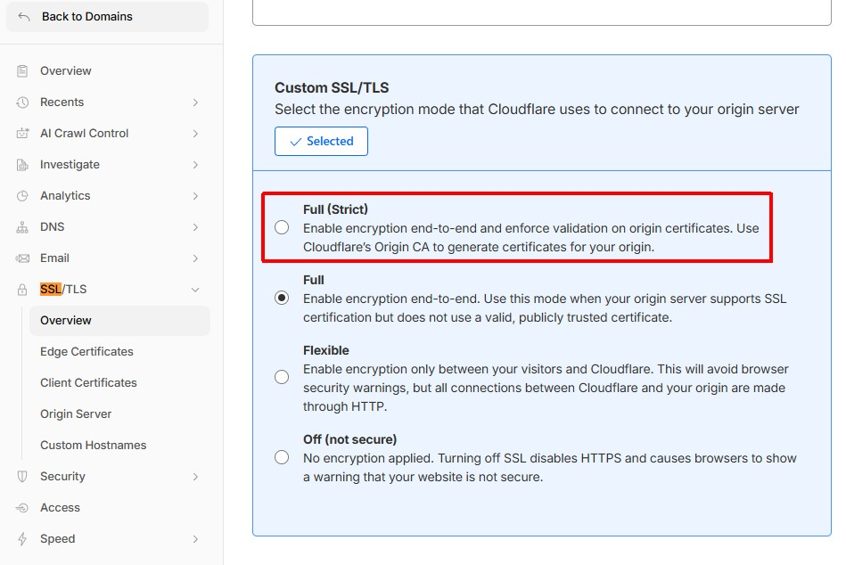
- TLS 1.3: ON（高速・安全な最新プロトコル）
- Opportunistic Encryption: ON（HTTP 要求も裏で HTTPS で取りに行く）
- Automatic HTTPS Rewrites: ON（HTML 内の
http://リンクを自動でhttps://に書換）
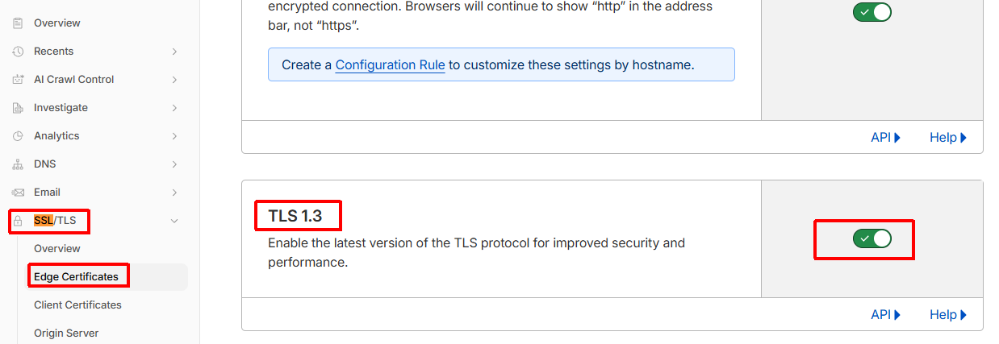
cloudflare.crt を信頼すると
Cloudflare 経由以外の HTTPS リクエストをオリジンが拒否できます（IP バイパス防止）。
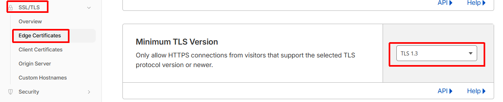
② HTTPS を自動化する（強制リダイレクト & HSTS）
オリジンとの間が暗号化されても、ユーザが http:// で来てしまえば
最初の 1 リクエストだけは平文。これを防ぐのが 常時 HTTPS + HSTS の組み合わせです。
ON にすると、Cloudflare が http:// へのリクエストを
自動で 301 → https:// にリダイレクトします。
アプリ側のリダイレクト実装が不要になり、設定漏れによる平文アクセスを完全に塞げます。
HSTS はブラウザに「このドメインは 今後一切 HTTP で来るな」と覚えさせるヘッダです。
Strict-Transport-Security: max-age=31536000; includeSubDomains; preload- Max Age:
6 months（15552000）から開始 → 問題なければ12 monthsに延長 - Apply HSTS to subdomains (includeSubDomains): 全サブドメインを HTTPS 化済みなら ON
- Preload: hstspreload.org に登録すると、 ブラウザのプリロードリストに焼き込まれ初回アクセスから HTTPS 強制になる
- No-Sniff Header: ON 推奨
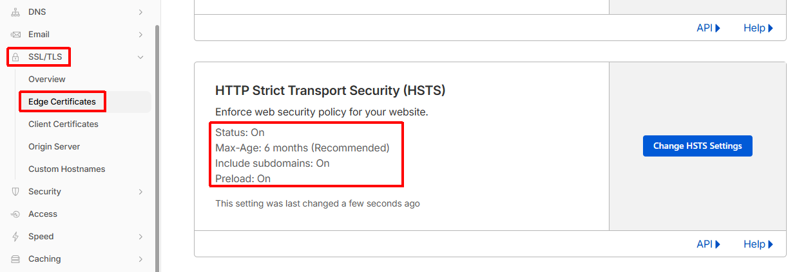
ドメインを Cloudflare の DNS に向けた瞬間に自動発行・自動更新されます。 ステータスが Active でない場合は、DNS の CAA レコード設定や ネームサーバ未切替が原因。
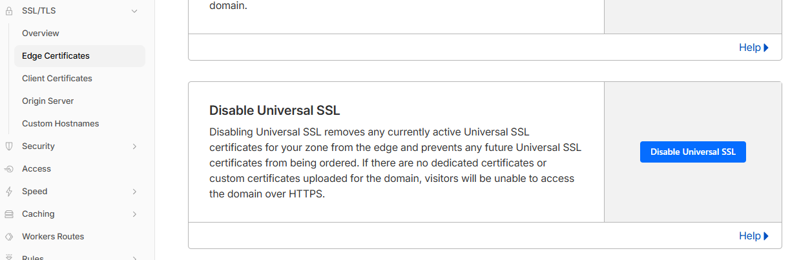
③ ボット対策を有効化する
Cloudflare のボット対策は、無料でもかなり強力です。 新ダッシュボードでは Security → Settings ページに各種トグルが集約され、 Web application exploits / DDoS attacks / Bot traffic / API abuse / Client-side abuse の 5 カテゴリに整理されています。
0 しか返さなくなっており、
Cloudflare 公式が
「threat score ベースのルールは作るな」
と明言しています。新ダッシュボードでは Security Level の UI 自体が見当たらないことが多く、
残っている場合も 実質的には "Under Attack Mode の ON/OFF スイッチ" としてしか機能しません。
本ページでは Security Level に依存せず、Bot Fight Mode + WAF Managed Rules + Rate Limiting
の組み合わせで防御する手順に統一しています。
Cloudflare が「明らかにボット」と判定したリクエストに対し 自動で計算チャレンジ（Proof-of-Work）を返します。Free プランで利用可能。 Pro 以上では Super Bot Fight Mode が選べ、 Likely Automated / Verified Bot を細かく制御できます。
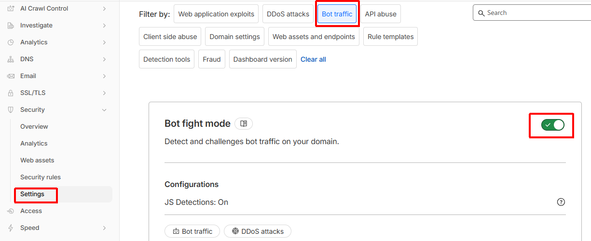
直リンク:
https://dash.cloudflare.com/?to=/:account/:zone/security/settings
User-Agent や HTTP ヘッダに既知の異常パターン（スパムボットでよく見られる 壊れた User-Agent、欠落必須ヘッダなど）があるリクエストを自動的に弾く機能です。 誤検知が起きにくく副作用がほぼ無いので、ON 固定で問題ありません。
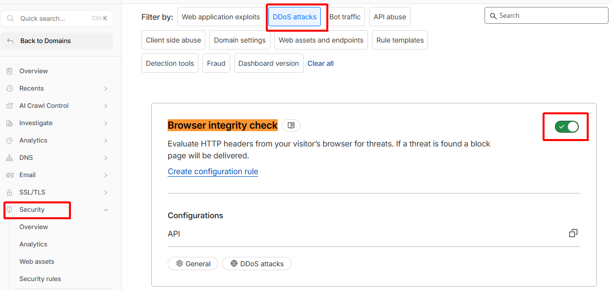
チャレンジ（CAPTCHA / JS チャレンジ）に一度通過したクライアントを、
どのくらいの間「人間扱い」して再チャレンジを免除するかを決める設定です。
デフォルトは 30 分。Cloudflare 推奨レンジは 15〜45 分で、
短すぎるとログインユーザに何度もチャレンジが出てしまい、
長すぎると共有 IP（オフィス NAT・モバイル回線）から
ボットが免除を引き継いでしまうリスクがあります。
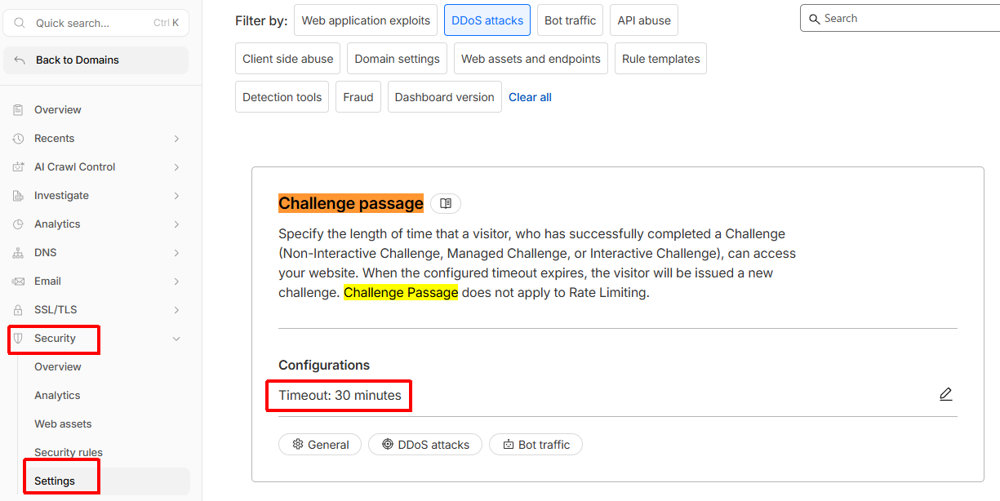
ページ内で参照している JS ライブラリのうち、 既知の脆弱性が報告されている古いバージョン（例: 古い jQuery）を、 Cloudflare の Edge で cdnjs ホストの安全版に自動的に書き換えて配信する機能です。 サードパーティテーマや古い WordPress プラグインに引きずられて 古い JS を読み込んでしまうサイトには特に有効。ON 推奨。
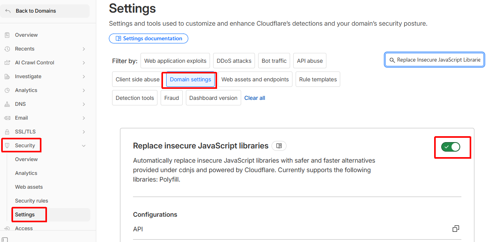
旧 Security Level の "I'm Under Attack!" に相当する機能で、 全アクセスに JS チャレンジを挟みます。 新ダッシュボードでは Security メニュー配下ではなく、ゾーン Overview ページ右側の Quick Actions に独立して配置されました。サイトが重くなり API クライアントも弾かれるため、 DDoS を実際に受けているときだけ一時的に ON にし、収束後すぐ OFF に戻すのが原則。 平常時は触らないこと。
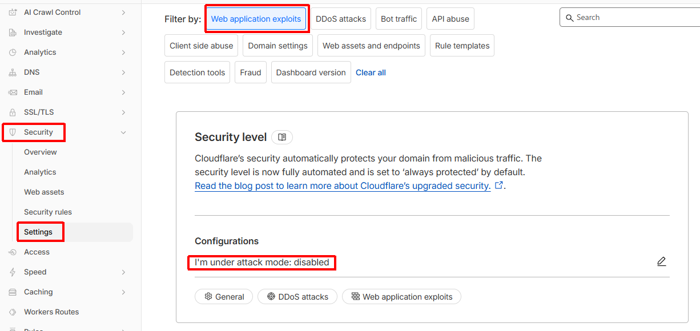
reCAPTCHA の代替となる Cloudflare 公式の無料 CAPTCHA。
アカウント単位で Add widget から sitekey / secret を発行し、サイトに
<div class="cf-turnstile" data-sitekey="..."></div> を埋め込み、
サーバ側で POST されたトークンを検証 API で検証します。
ユーザ操作不要（不可視チャレンジ）でフォーム自動投稿を弾けます。
# Turnstile の検証（サーバサイド）
curl -X POST "https://challenges.cloudflare.com/turnstile/v0/siteverify" \
-d "secret=$TURNSTILE_SECRET" \
-d "response=$TOKEN_FROM_FORM"
直リンク: https://dash.cloudflare.com/?to=/:account/turnstile
新ダッシュボードでは Rate Limiting / Custom Rules はかつての WAF ページから
「Security rules」ページに移動・統合されました。Free プランでも
1 ルール まで Rate Limiting が組めます。
/login や /wp-login.php のような高リスクパスに
「同一 IP から 1 分 10 リクエスト超でブロック」を入れるのが定番。
# 例: /login へ 1分 10 回超えたらブロック
URI Path equals "/login"
Action: Block
Period: 1 minute
Requests: 10
直リンク: https://dash.cloudflare.com/?to=/:account/:zone/security/security-rules

+α 合わせて設定すべきもの
上記 3 本柱に加え、攻撃面を一段階下げるために以下も入れておくと実質 「やれることは無料枠で全部やった」状態になります。
🛡 WAF マネージドルール
OWASP Top 10 などの既知攻撃パターンを自動でブロック。Free でも Cloudflare Free Managed Ruleset が使える。
Security › WAF › Managed rules🚫 カスタム WAF ルール
国別ブロック / 特定 User-Agent ブロック / wp-admin を自宅 IP のみ許可、
などをノーコードで追加できる。新ダッシュボードでは Rate Limiting と同じ
Security rules ページに統合された。
🔑 DNSSEC を ON
DNS レスポンスの改ざん（キャッシュポイズニング）を署名で検証。 ボタン 1 つで有効化できるが、レジストラ側に DS レコード登録が必要。
DNS › Settings › DNSSEC📧 Email Address Obfuscation
HTML 中の mailto: をスクレイパー対策で自動難読化。
メールアドレス収集系ボットの収穫率を激減させる。デフォルト ON。

🔗 Hotlink Protection
画像直リンク（外部サイトに <img> 埋込）を遮断。
画像転送量の盗用と帯域コストを防ぐ。
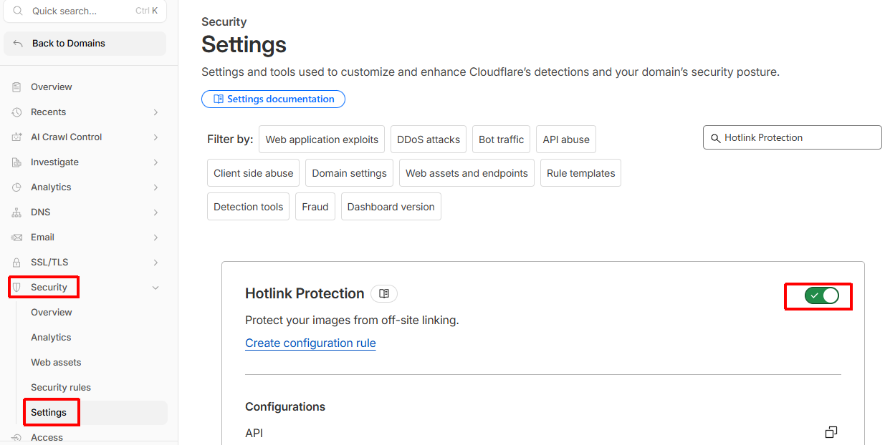
🌐 .onion ルーティング（任意）
Tor ユーザ向けに .onion アドレスを自動発行・対応。
プライバシー重視メディアでは有用。一般サイトでは不要。
🚷 オリジン IP の隠蔽
DNS A レコードは必ず オレンジ雲（Proxied）に。 グレー雲（DNS Only）だとオリジン IP が漏れて Cloudflare 迂回攻撃の踏み台になる。
DNS › Records › 各レコードの Proxy 状態🔒 アカウントの 2FA
Cloudflare アカウント自体を奪われると DNS / 証明書 / WAF を全部書き換えられる。 TOTP もしくは WebAuthn の 2 要素認証を必ず ON。
右上アイコン › My Profile › Authentication📜 Audit Logs を定期確認
誰がいつどの設定を変えたかが残る。設定改ざん検知 / 共同管理者の事故防止に。
Manage Account › Audit Log🔄 Page Shield（Pro+）
サイトに読み込まれる JavaScript を監視し、 サプライチェーン経由のスキマー（Magecart 等）を検知。
Security › Page Shield最終チェックリスト
新規ドメインを Cloudflare に乗せた直後、上から順に潰していけば抜けが出ません。
- SSL/TLS モード を
Full (strict)に設定した - Minimum TLS Version を
1.2以上に上げた - TLS 1.3 / Opportunistic Encryption / Automatic HTTPS Rewrites を ON にした
- Always Use HTTPS を ON にして HTTP→HTTPS 強制リダイレクトを有効にした
- HSTS を有効化（最初は短い max-age → 段階的に延長）
- Universal SSL が
Activeになっていることを確認した - Bot Fight Mode を ON にした（Security Level は threat score 廃止により実質非推奨なので触らない）
- Browser Integrity Check / Privacy Pass を ON にした
- ログイン系パスに Rate Limiting ルールを 1 つ入れた
- WAF Managed Rules（Free） を有効化した
- DNS レコードがすべて オレンジ雲（Proxied） になっている
- DNSSEC を有効化し、レジストラ側に DS レコードを登録した
- Cloudflare アカウントに 2FA をかけた